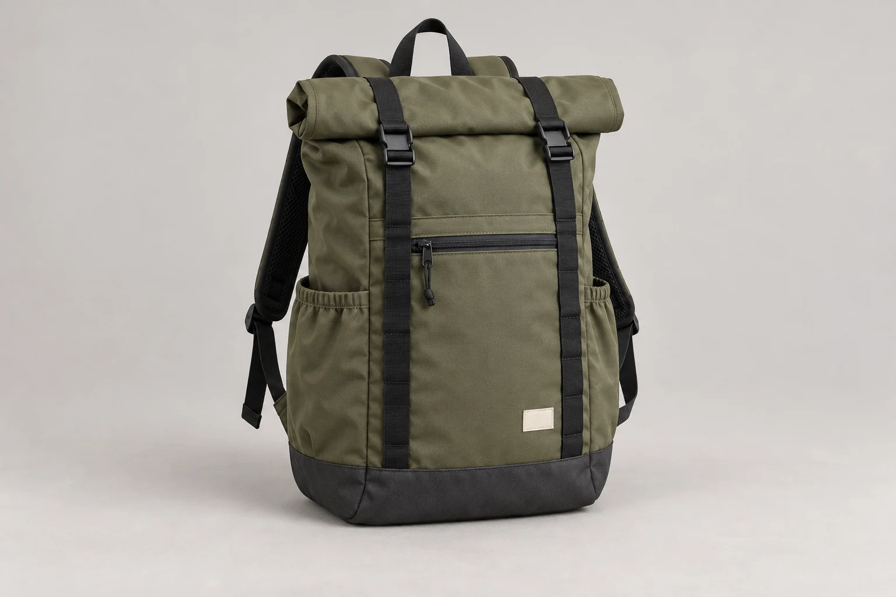
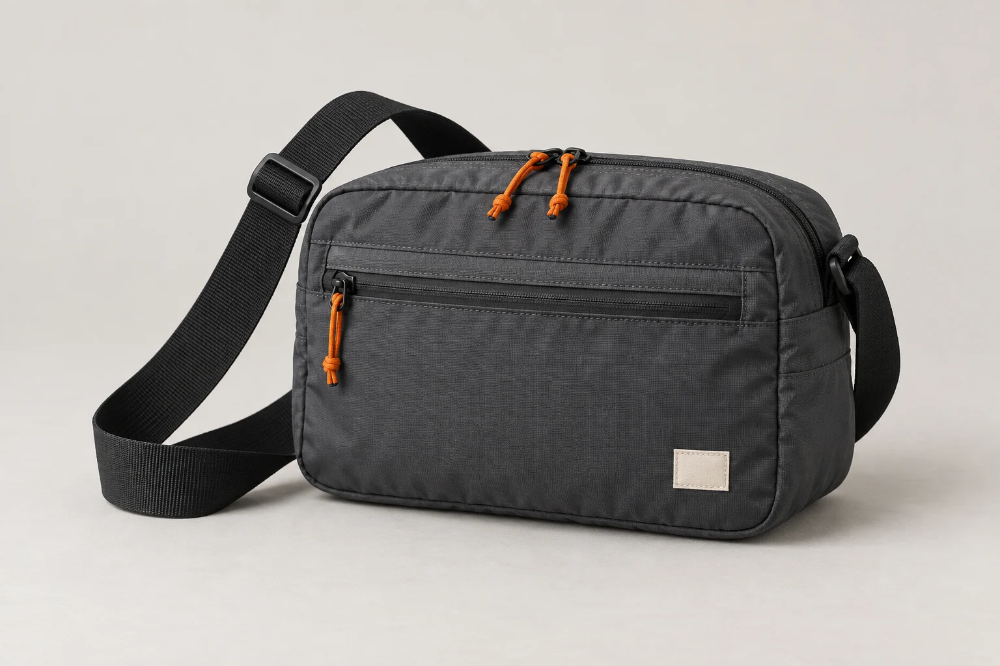
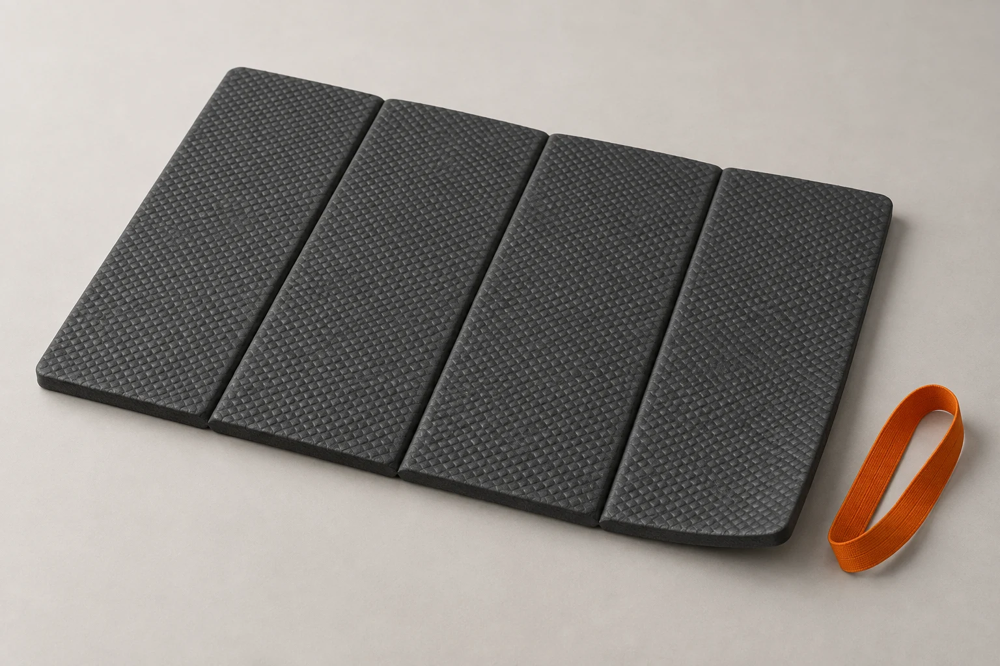

Ridge 22
£88.00A little more room.
22 L660 gMoss

No summit required.
A river path. The last stretch of a familiar hill. Lunch, a layer and time to stop. We make a small range of walking gear for days like these.

A little more room.

Just the essentials.

Make room for a pause.
Illustrative UK prices. These are concept products; no order or payment is made here.
Start with what you carry
The right bag begins with your own things. Our kit builder compares your expected load with each bag and shows the trade-offs.
Build your walking kit ↗MOOR
A smaller local loop
RIDGE
A full walking day
Litres describe capacity. Your kit, shape and fit still matter.
Let damp fabric dry. Brush off yesterday’s mud. Take a look at that zip before the next outing.
Fit, care & repair notes ↗